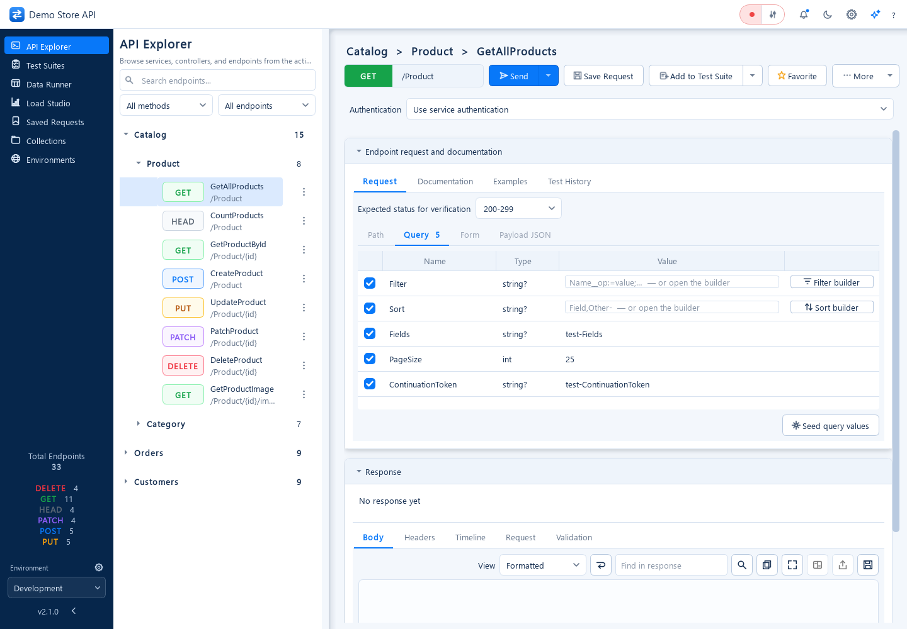
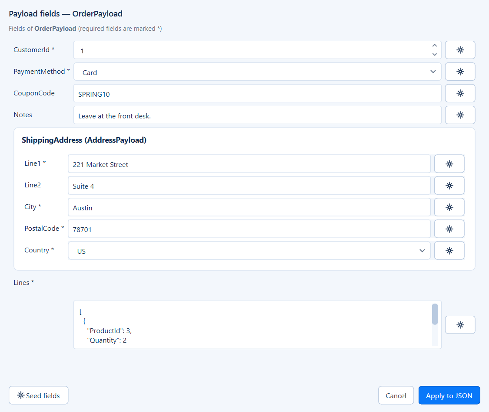
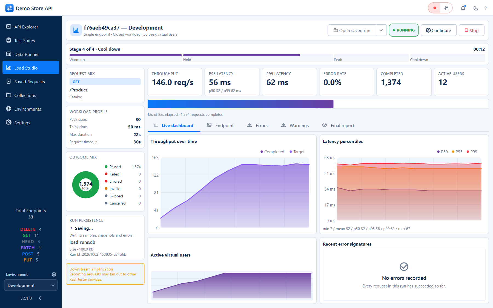

Rest Tester turns your API catalog into a guided desktop workspace. Build requests from real schemas, verify responses, save regression suites, drive calls from CSV data and measure behaviour under load.
Most REST clients start empty. Rest Tester starts from a catalog of your services, endpoints, parameters, enums and payload schemas - and builds the right UI for every endpoint.
01
❖
Schema-driven, not free-text
Payloads render as typed forms: enums become drop-downs, flags become checkboxes and nested objects become groups. Filters only offer fields the endpoint can really filter on.
No account and no cloud sync. Requests go straight from your machine to your API, history lives in a local SQLite file and runs are portable files you own.
Explore an endpoint, capture it as a test, feed it a spreadsheet, then put it under load - each workspace answers one question at a time.

API ExplorerBrowse every service and endpoint, build the request from its schema and inspect a formatted, searchable response.

Payload formTyped fields generated from the payload schema, with seed data on demand.
Test SuitesRun analysis across every case, with assertion-by-assertion results.
Data RunnerOne request per CSV row, validated before sending and exportable afterwards.

Load StudioStaged load profiles with a live dashboard and a detailed final report.
Catalog BuilderDescribe services, endpoints and schemas visually - or generate them from source.
Ask AIDraft requests, suites, CSV mappings and load profiles. Read the AI guide.
The Explorer, builders and AI captures were refreshed on 3 October 2026 using the demo Store catalog. AI plans and usage use scripted offline responses, not live provider calls. Other images illustrate the existing workspaces. Tour every feature.
One catalog. Six workspaces.
From first request to release confidence.
Each workspace reuses the same catalog, environments and credentials, so a request you build once can be verified, repeated, scaled and documented.